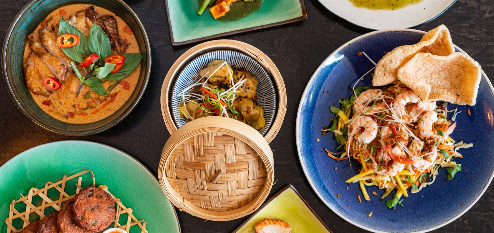
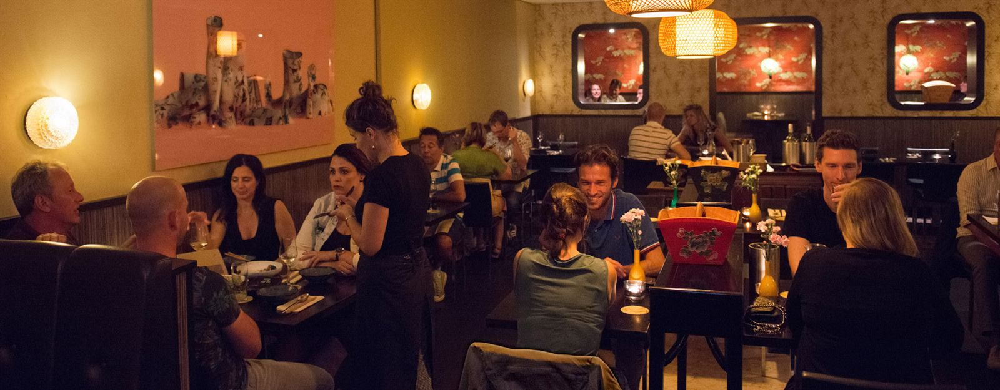
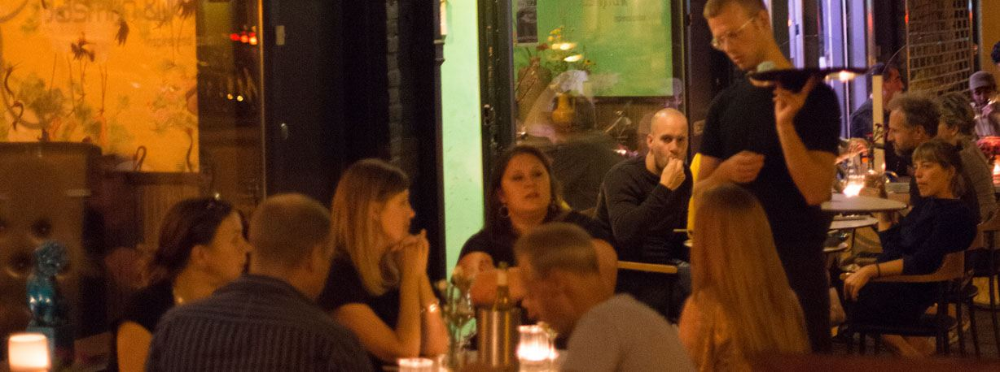
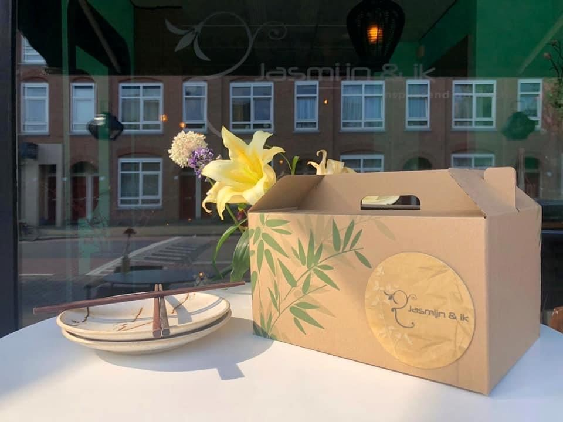

Aziatisch in een modern jasje
De Vietnamese, Chinese en Thaise koks van Jasmijn & ik bereiden authentieke gerechten van verse ingrediënten, zoals je die in geur- en kleurrijk Azië ook hebt gegeten. Geniet ervan in ons warme en sfeervolle restaurant.

Aziatisch restaurant in Lombok, Utrecht
De kruidige Thaise, de frisse Vietnamese en de milde Kantonese keuken. Alles zelf gemaakt, van dumplings tot langzaam geroosterde chilipasta.
Di t/m za vanaf 17:30 · Kanaalstraat 219
Ontdek de kruidige Thaise, de frisse Vietnamese en de milde Kantonese keuken bij Jasmijn & ik in het levendige Lombok. Onze keuken maakt, net als in Azië, alles zelf. Van Chinese dumplings tot langzaam geroosterde Thaise chilipasta.
De variatie aan smaken, geuren en texturen vind je zowel in de vleesgerechten als in de vegetarische en veganistische (100% plantaardige) gerechten terug. Onze bediening vertelt je er graag van alles over!

De Vietnamese, Chinese en Thaise koks van Jasmijn & ik bereiden authentieke gerechten van verse ingrediënten, zoals je die in geur- en kleurrijk Azië ook hebt gegeten. Geniet ervan in ons warme en sfeervolle restaurant.
We werken met biologisch vlees en duurzame vis. Maar we verwennen onze gasten ook graag met vegetarische of 100% plantaardige gerechten. Kom proeven: ook als vleeseter word je aangenaam verrast.
Voor gasten met een allergie is van alles mogelijk. Veel gerechten kunnen glutenvrij of lactosevrij gemaakt worden. Bij andere diëten lichten we het graag mondeling toe.
Samen eten is bij ons samen delen.
Vier gangen, zes gerechten: een voorgerecht, een tussengerecht, een banket van drie gerechten met jasmijnrijst om te delen en een dessert. € 49,75 per persoon, vanaf twee personen en per tafel.
Voor groepen vanaf zeven personen serveren we een 4-gangen verrassings-Jasmijnmenu van € 49,75 per persoon, ook veganistisch. À la carte is dan niet mogelijk.

Door drukte in het restaurant zijn het Jasmijn & ik menu en de losse gerechten momenteel alleen in overleg op te halen. Bestellen gaat telefonisch via 030 293 89 07.

Geef een avond Jasmijn & ik cadeau. De cadeaubon koop je voor verschillende bedragen en je ontvangt hem na aankoop meteen per e-mail.
Bestel een cadeaubonWe zoeken bediening: hospitality driven, een enthousiaste teamspeler, flexibel en gek op Aziatisch eten. Je spreekt goed Nederlands en hebt ervaring.
Mail je motivatie en cvBel ons op 030 293 89 07 (di t/m za vanaf 15:30) of mail naar info@jasmijnenik.nl. Online reserveren kan tot 16 personen; met een grotere groep bel je even. Niet elke tafel is online te reserveren, dus lukt het gewenste tijdstip niet, bel dan gerust. Annuleren voor dezelfde dag doe je telefonisch.
De keuken is open tot 22:00.
Kanaalstraat 219, 3531 CH Utrecht
In de (zij)straat betaald parkeren, ma–za tot 23:00 (€ 5,43 per uur). Aan de andere kant van de brug, aan de Laan van Nieuw Guinea (ongeveer 1 minuut lopen), ma–za tot 21:00 (€ 4,01 per uur).